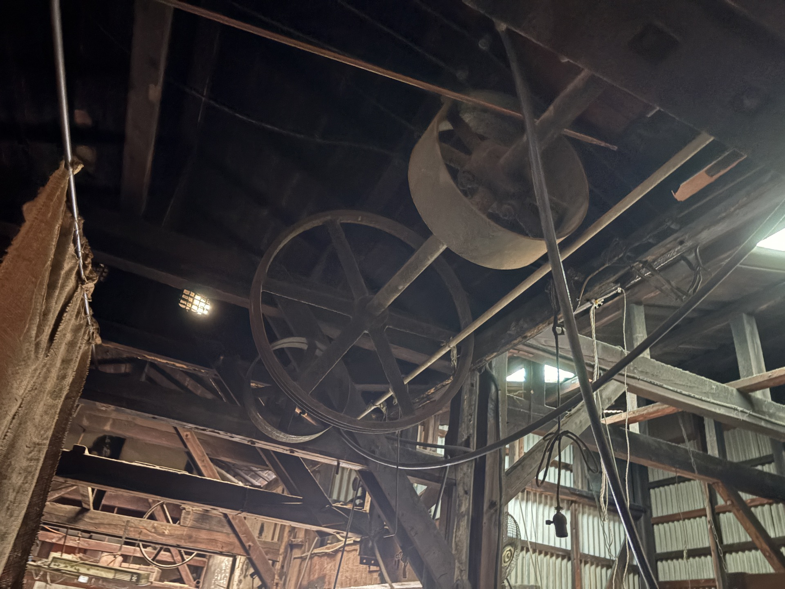
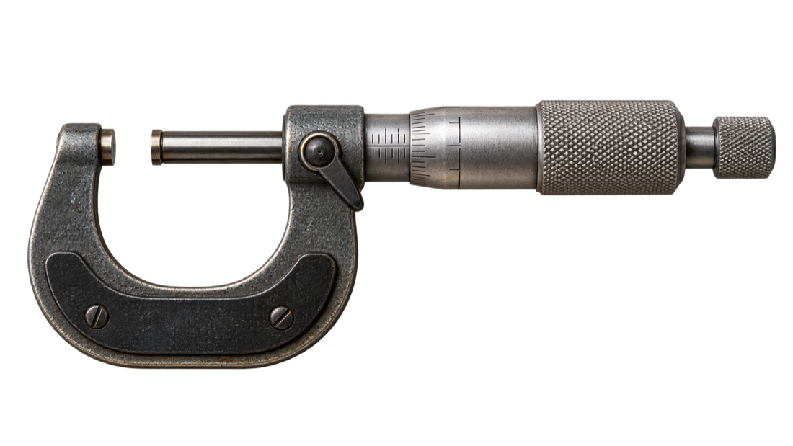
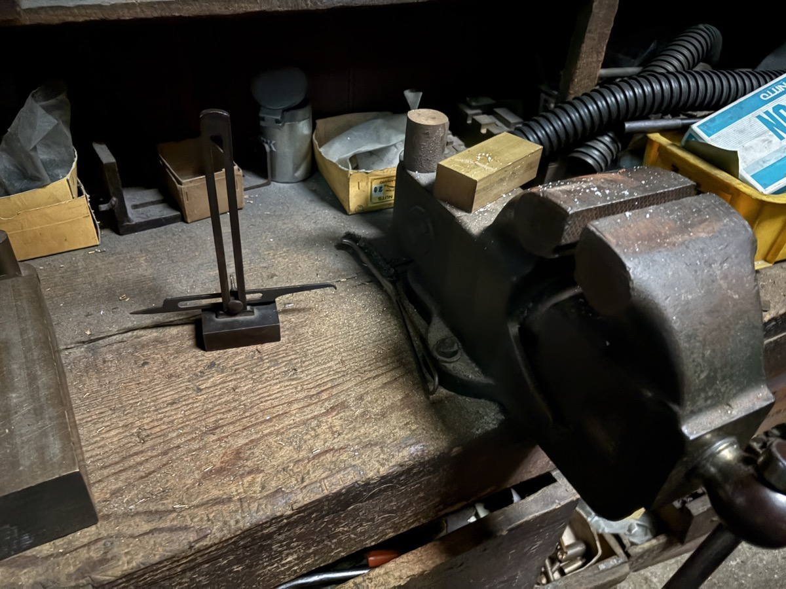

01 / CUT
削る
汎用機の即応力と、NC機の再現性。
数量・形状・納期に合わせて選びます。
ABOUT US
長く使う機械と、
1920年、大阪・姫里で創業。
野尻製作所は、銅・真鍮・アルミを中心に精密機械加工を行う町工場です。古くから使い続ける汎用機の感覚と、NC機による安定した加工。それぞれの良さを、仕事に合わせて使い分けています。
図面だけでは決めきれないはめ合い、急ぎの試作、加工後の表面処理。「できるか分からない」という段階から、一緒に方法を考えます。


OUR CRAFT
削る。合わせる。仕上げる。
汎用機の即応力と、NC機の再現性。
数量・形状・納期に合わせて選びます。
同じ寸法でも、材質や相手部品によって嵌め心地は変わります。シャフトやブシュを手元に置き、必要な感触へ追い込みます。

バリ、表面、手触りまで。加工後の処理も、使われる場所を考えて整えます。
MACHINES
01 / 06

工場に刻まれた、ものづくりの時間。

長年の仕事を支える汎用機。

一台ごとの癖まで、技術として受け継ぐ。

現代の再現性とスピードを加える。

CAPABILITY
できること
銅、真鍮、アルミを中心とした精密切削。素材の特性に合わせて加工します。
Cu / CuZn / Al1個だけの試作、追加工、急な設計変更。汎用機を活かして柔軟に対応します。
FROM 1 PIECE図面の寸法だけでなく、相手部品とのはめ合いや実際の使われ方まで確認します。
MICRON FITTINGメッキ、塗装、半田付け、ろう付け、プレスまで、窓口をひとつにまとめます。
ONE STOPWORKS
加工品写真は追加素材に差し替え予定です。現在は仮写真でレイアウトを構成しています。

旋盤・フライス・マシニング

現物合わせ・はめ合い調整

精密旋盤・表面仕上げ
HISTORY / PROVISIONAL
受け継ぐのは、年数ではなく姿勢。
大阪・姫里で創業
精密加工の歩みを始める。
汎用機と積み重ねる
手で読み、現物に合わせる技術。
新旧の技術を使い分ける
NC機の再現性と、職人の判断をひとつに。
沿革写真・正式な年表をご提供後、内容を差し替えます。
COMPANY
NOJIRI SEISAKUSHO CO., LTD.
CONTACT / MACHINING CONSULTATION
材質、数量、希望納期など、分かる範囲でお聞かせください。試作1個からご相談いただけます。
TEL06-6471-0615